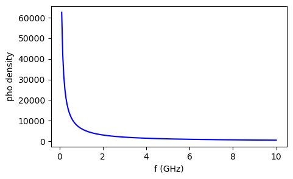
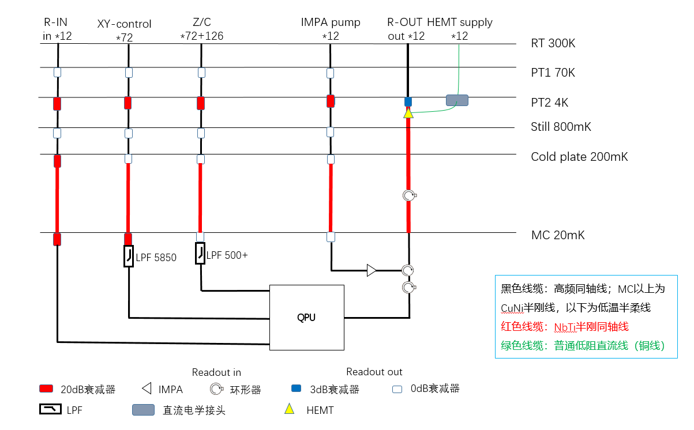
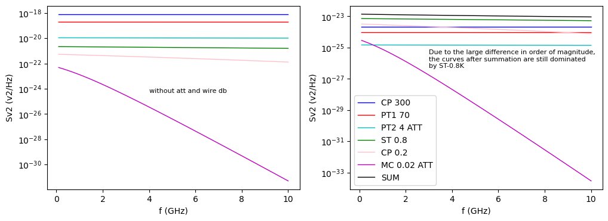

1. 电压噪声谱密度¶
温度会导致导体内部的自由电子不断进行热运动，对于阻值为 R 的电阻，Johnson-Nyquist 噪声的电压谱密度（单位： \(V^2/Hz\) ，等于功率谱密度 * R）为：
在 300K 常温下，RF 频段（GHz），\(hf<<k_BT\) （比值约在万分之一）。计算得到 \(hf\frac{1}{exp(hf/k_BT)-1}\approx k_BT\)，也就是说 \(S_{V2}\approx 4k_BRT\)，这就是白噪声。
并且，白噪声的频谱是均匀分布的，在所有频率上都有相同的能量密度。从量子的角度解释，温度引起了光子数涨落，进而和量子比特耦合，其密度为 \(n(T,f)=\frac{1}{exp(hf/k_BT)-1}\) 。（单位： \(Hz^{-1} s^{-1}\) )

从上图可以看到，频率越高，热激发产生的光子数密度越低，但是同时光子频率越高，单光子能量也高，因此最终的噪声密度 \(S_{V2}\approx 4k_BRT\) 仍是一个与 f 无关的定值（在 300K 下）。
Q1：既然热噪声分布在全频段，并且其强度仅和温度有关，和输入信号无关。那么这里为何仅针对 f 频率的热光子？是否热噪声仅仅对相应频率的信号影响较大？
A1：在 REF.KONG.P57 找到了答案 “对于 qubit readout 线路来说，实际有影响的是频率𝑓𝑐附近的噪声成分”，这对于其他线路应该也是一样的。
XY 通道信号频率在 4-6 GHz
READOUT-IN 频率 6-8 GHz
两个通道的光子数密度为：1249 和 892
频率范围内积分，总光子数分别是 2533 和 1797
现在考虑降低光子数密度，各线缆通道需要多少衰减：
XY 通道降低到 \(10^{-2}\) 以下，需要 51dB
READOUT-IN 降低到 \(10^{-3}\) 以下，需要 60dB
Q2：这里计算得到READOUT-IN需要衰减为 60dB ，与预期的 70dB 有出入（线缆损耗约为10）。该问题暂存。

实际上，每层的热源都会产生热噪声。接下来考虑按上图的设计，XY 通道上每一层产生的热噪声经过后级逐级衰减之后，到达 base (MC) 层时的噪声谱密度。
不同线缆单位长度的插损可以从 REF.某计算环境支撑系统项目方案（ZB) -0908.docx 中获得：
（1）高密度半刚线插损约为15.6dB/m
RT-PT1：15.6 dB/m×0.18m＝2.808dB
PT1-PT2：15.6 dB/m×0.286m＝4.4616dB
PT2-Still：15.6 dB/m×0.248m＝3.8688dB
Still-CP：15.6 dB/m×0.166m＝2.5896dB
（2）普通密度半刚线插损约为15dB/m
RT-PT1：15 dB/m×0.25m＝3.75dB
PT1-PT2：15dB/m×0.265m＝3.975dB
PT2-Still：15dB/m×0.22m＝3.3dB
Still-CP：15 dB/m×0.07m＝1.05dB
（3）CP-MC 使用的是 NbTi 线，极低温下基本没有损耗；300mm 半柔线插损为1.44dB，
（4）LPF 5850+插损为0.83dB；LPF 500+插损为0.94dB。

可以看出
只有在 20 mK 层，噪声谱对频率敏感，这时热光子能量 \(hf\) 接近热力学标度 \(k_BT\)；
由于在 4-6 GHz 范围，20 mK 层与其他层存在数量级上的差异，求和后的谱密度曲线（black）仍以 ST-0.8K 层（green）为主。